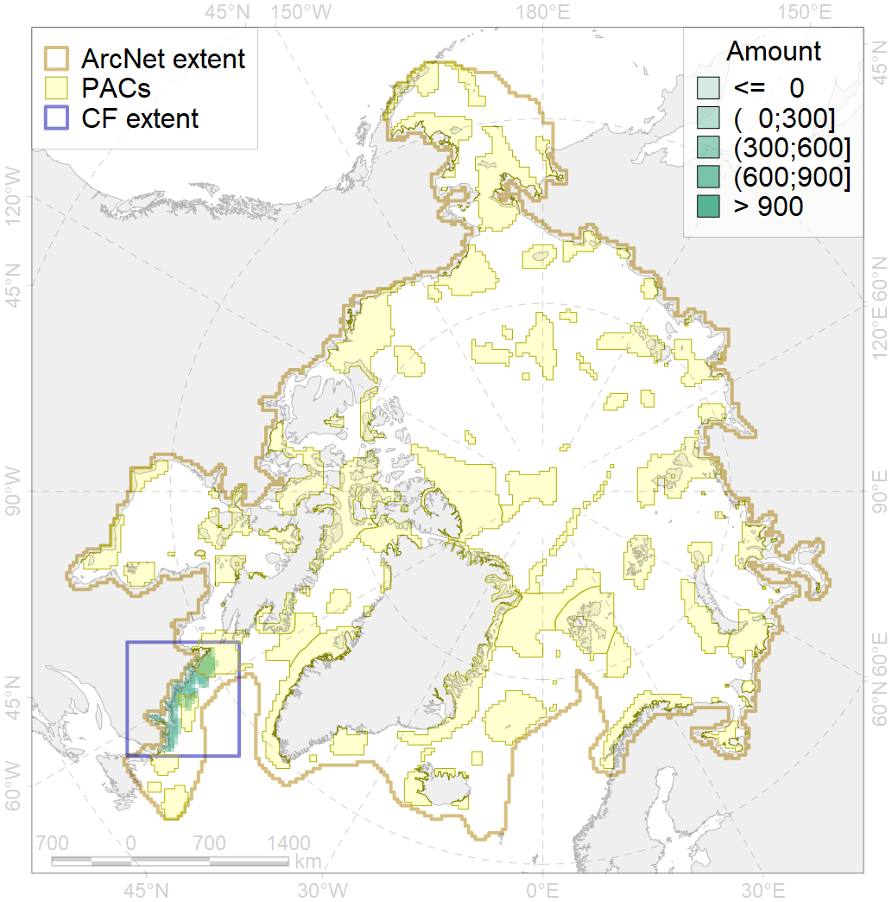

2012

| CF ID | 2012 |
| CF Name | Bearded seal whelping areas in the Labrador area |
| Time Period | 2007-2018 |
| Source(s) | Surrogate data; bathymetry from http://www.naturalearthdata.com/downloads/10m-physical-vectors/; DFO |
| Seasonality | March-June |
| Depth Horizon | 0-200 m |
| Methodology | Habitat preference research and expert input |
| Author Name | Irina Trukhanova |
| Notes | |
| Conservation Target Set in the Scenario | 0.24 |
| Conservation Target Achieved in the Scenario | 0.370 (Scenario: 154.2%) |
| PAC ID | Proportion in the PAC | Contribution to ArcNet Target Achievement | PAC’s Contribution to the Achieved Target |
|---|---|---|---|
| 76 | 26.6% | 102.0% | 66.2% |
| 77 | 9.6% | 32.5% | 21.1% |
| 78 | 0.7% | 2.2% | 1.4% |
| inner | 36.8% | 136.8% | 88.7% |
| outer | 63.2% | 17.5% | 11.3% |